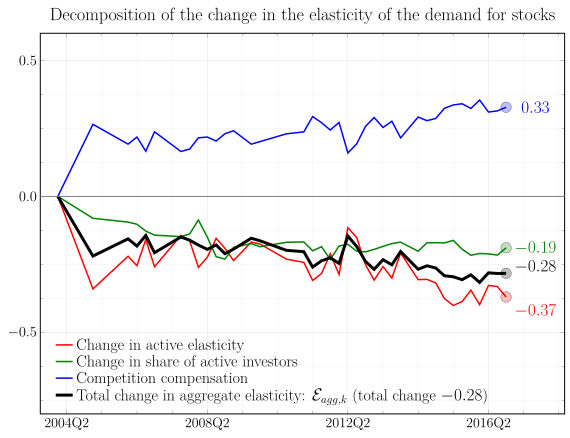

How Competitive is the Stock Market? Theory, Evidence from Portfolios, and Implications for the Rise of Passive Investing (with Valentin Haddad and Paul Huebner) First version: April 2021 This version: March 2022 Download the paper
Abstract: We develop a framework to theoretically and empirically analyze investor competition on financial markets. The classic view assumes that markets are very competitive: if a group of investors changes its behavior, other investors react such that nothing happens in equilibrium. Our framework quantifies the strength of the competitive response. We estimate a demand system of institutional investors in the US stock market accounting for two layers of equilibrium: how investors compete with each other in setting their strategies and how prices adjust to clear asset markets. We find that investors react to the behavior of others in the market: when an investor is surrounded by less aggressive traders she trades more aggressively. This reaction reduces the equilibrium consequences of changes in individual behavior by 50%. However, it also implies that the stock market is far from the competitive ideal. A consequence of this result is that the large increase in passive investing over the last 20 years has led to substantially more inelastic aggregate demand curves for individual stocks, by 15%.

Write up in Risk.net How hedge funds can be limited in fixing mispricings (paywall) Write up in UCLA Anderson Review As Passive Investing Spreads, Overall Market Becomes Less Competitive SSRN link
Home